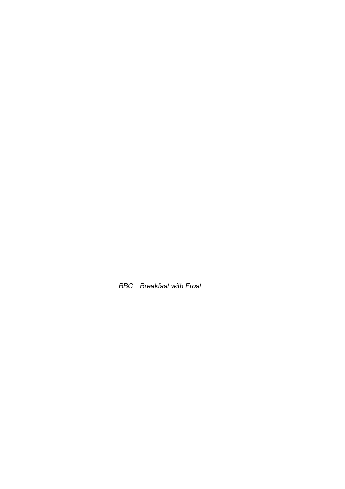

The Report
of the Iraq Inquiry
The absence
of a “smoking gun” ....................................................................................
69
Advice for
Mr Blair in early January 2003 .................................................................
71
Public
statements, 7 and 8 January 2003 .................................................................
78
Publication
of the UK’s policy objectives ............................................................
78
Mr Hoon’s
statement, 7 January 2003 ...............................................................
80
Mr Blair’s
speech to the Foreign Office Conference, 7 January
2003 ................
81
Prime
Minister’s Questions, 8 January 2003 ......................................................
83
Cabinet, 9
January
2003 ...........................................................................................
84
Security
Council, 9 January 2003 .............................................................................
86
Growing
pressure to find evidence of Saddam Hussein’s
non‑compliance ..............
88
Mr Blair’s
press conference, 13 January 2003 ...................................................
91
Lord Goldsmith’s
draft advice, 14 January 2003 ................................................
93
Prime
Minister’s Questions, 15 January 2003 ....................................................
93
Concern
that the US might act at the end of January ...............................................
95
Cabinet, 16
January
2003 .........................................................................................
98
The
decision to deploy ground forces ..............................................................
101
Mr Blair’s
meeting with Dr Blix, 17 January 2003 ...................................................
103
Security
Council, 20 January 2003 .........................................................................
105
The
positions of other members of the Security Council ........................................
107
Mr Blair’s
conversation with President Bush, 24 January 2003 ..............................
113
Cabinet, 23
January
2003 ................................................................................
114
Mr Blair’s
Note to President Bush, 24 January 2003 .......................................
115
Mr Blair’s
interview on BBC’s
Breakfast
with Frost, 26
January 2003 .................... 121
Security
Council, 27 January 2003 .........................................................................
124
President
Bush’s State of the Union address, 28 January 2003 ............................
131
Security
Council, 29 January 2003 .........................................................................
134
Mr Blair’s
meeting with President Bush, 31 January 2003 ............................................
135
The US
position ......................................................................................................
135
Other
views .............................................................................................................
138
JIC
Assessment, 29 January 2003 .........................................................................
144
Cabinet, 30
January
2003 .......................................................................................
150
Mr Blair’s
conversations with President Bush, 29 and 30 January
2003 ................
151
Mr Blair’s
meeting with Mr Aznar, 30 January 2003 ...............................................
153
Papers
produced for Mr Blair’s meeting with President
Bush ................................
154
MOD letter,
29 January 2003 ...........................................................................
154
FCO advice,
30 January 2003 .........................................................................
155
Lord Goldsmith’s
minute, 30 January 2003 ......................................................
158
2